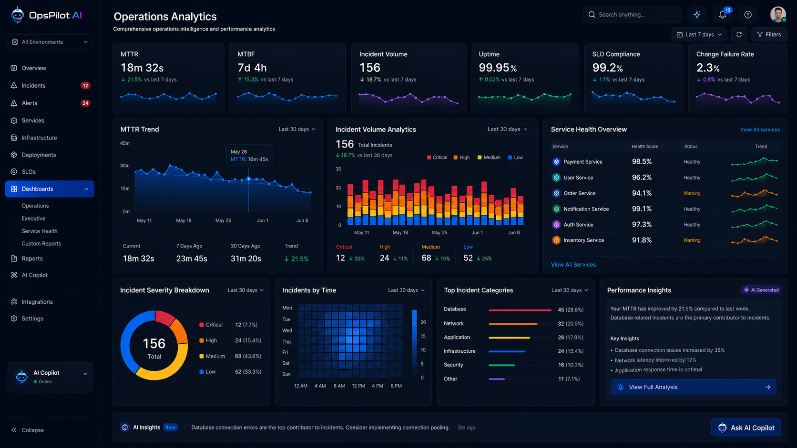
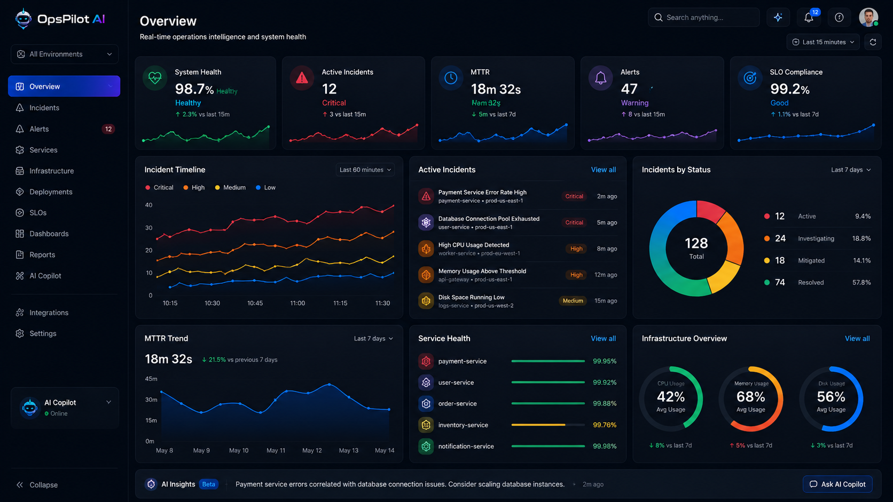
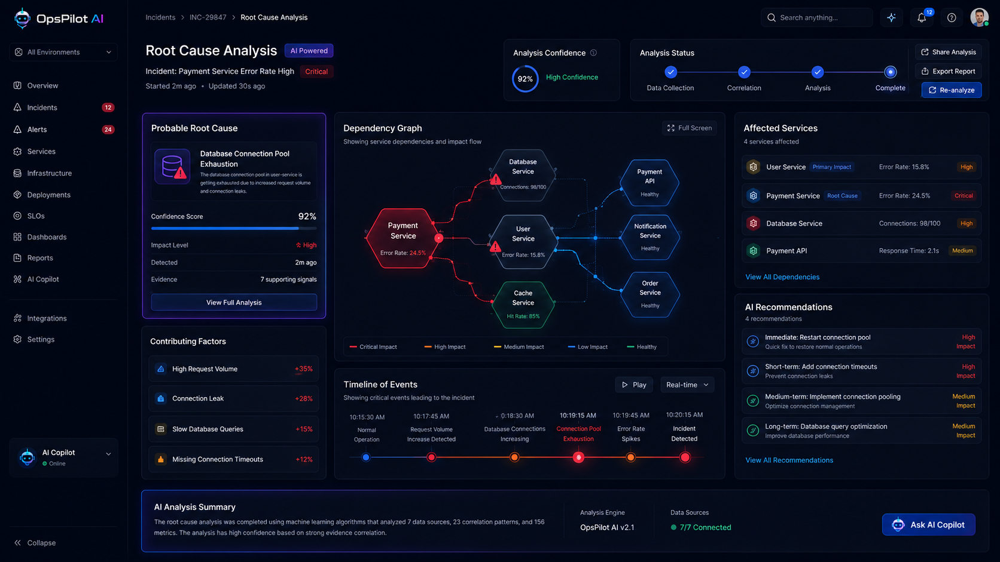
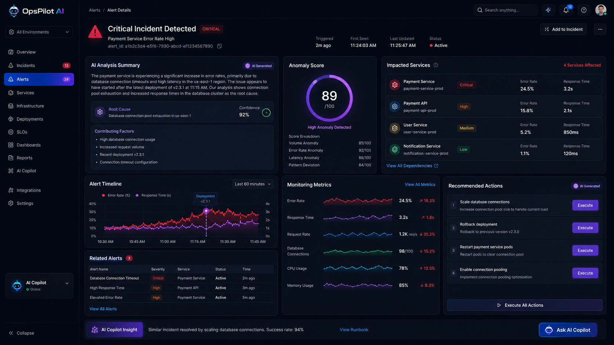

AI Incident Monitoring
Faster Root Cause Analysis
Reduced Manual Effort
OpsPilot AI helps IT Operations, DevOps and SRE teams detect incidents, analyze alerts, identify root causes and automate operational workflows.
Automatically analyzes monitoring alerts and prioritizes incidents.
Identifies probable causes with AI-driven investigation.
Accelerates response with intelligent recommendations.
Track reliability, uptime and incident performance metrics.

Centralized monitoring dashboard for incidents, services and infrastructure.

Track MTTR, incident volume, uptime and operational health.

AI-powered incident investigation and anomaly detection.

Identify dependencies, affected services and remediation steps.
Collect alerts from monitoring and observability platforms.
AI investigates logs, metrics and operational context.
Identify probable root causes and affected dependencies.
Provide recommendations and automate remediation workflows.
Reduce downtime, improve reliability and accelerate incident resolution with OpsPilot AI.
View Project